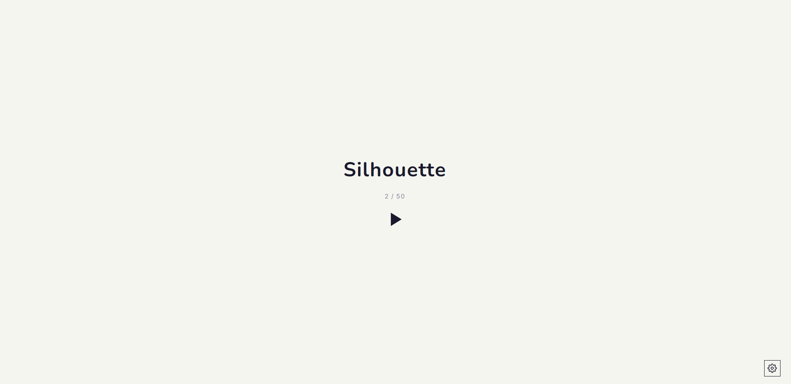

Puzzle Game
Silhouette
三維線條投影解謎
Play
啟動遊戲

▶ 啟動 Silhouette ↗Overview
這是什麼
Silhouette 是一款在瀏覽器裡執行的解謎遊戲。畫面中散落著一組三維線條，你的任務是旋轉視角、調整位置，直到這些線條從某個角度看過去，剛好對齊成畫面頂端給定的目標剪影。對準的瞬間，關卡就通關了。
它的核心是一個簡單卻不直覺的事實：同一組三維結構，從不同角度投影到二維平面，會得到截然不同的形狀。遊戲把「找到那個對的角度」變成謎題本身。
How to Play
玩法
基本操作
拖曳線條、旋轉視角、縮放畫面，三種操作配合著找出能通關的角度。畫面頂端會顯示本關的目標剪影作為參考，你要讓散落的線條從某個視角看過去，剛好對齊成那個圖形。
| 拖曳 | 移動線條 |
| 旋轉 | 轉動觀看視角 |
| 縮放 | 滾輪 / 雙指縮放 |
| 目標參考 | 畫面頂端的目標剪影縮圖 |
關卡與進度
遊戲以關卡推進，附計時器記錄每關用時。進度可在本機儲存，並支援匯出 / 匯入存檔，換裝置也能接續。介面提供中文與英文切換。
| 進度 | 本機儲存 · 匯出 / 匯入存檔 |
| 語言 | 中文 · English |
| 計時 | 每關計時器 |
Behind the Scenes
背後的幾何
Credits
製作
| 遊戲設計 / 開發 | William Lu 呂乃崴 |
| 音樂 | TBA |
| 技術 | HTML5 Canvas / WebGL · JavaScript |
| 平台 | 瀏覽器（桌機 / 行動裝置） |